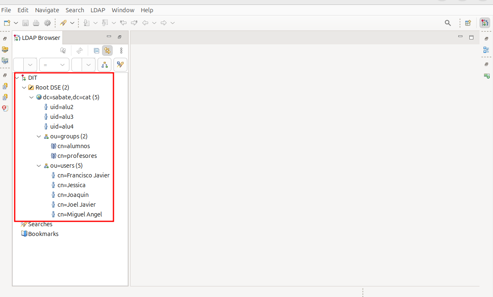
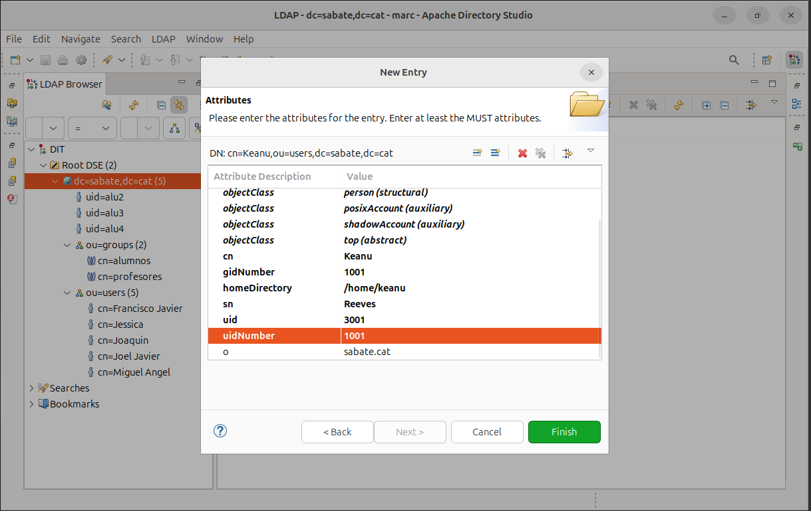

Introducció
En aquest sprint, descriurem com configurar en un entorn Ubuntu Linux un servidor LDAP per a la gestió centralitzada de dominis, usuaris, grups i polítiques de seguretat. El procés inclou la instal·lació i configuració d'un servidor LDAP, la creació de comptes d'usuari i la definició de polítiques de seguretat.
Instal·larem serveis essencials com servidors de fitxers, que s'integren amb LDAP per a l'autenticació centralitzada. Implementarem connexions remotes segures i gestionarem permisos d'accés mitjançant LDAP.
Instal·lació domini LDAP
-
Un domini LDAP (Lightweight Directory Access Protocol) és una estructura jeràrquica que s'utilitza per gestionar i organitzar informació sobre usuaris, grups, recursos i altres objectes en una xarxa. Serveix com a repositori centralitzat per a l'autenticació i la gestió d'accés, permetent que múltiples sistemes i aplicacions comparteixin la mateixa informació d'usuaris i permisos.
-
Una Unitat Organitzativa (UO) és un contenidor dins de l'estructura LDAP que s'utilitza per organitzar objectes com usuaris, grups i recursos. Les UO permeten una gestió més fàcil i lògica dels objectes, ja que es poden agrupar segons criteris com departaments, ubicacions o funcions.
-
Per crear un domini LDAP haurem de seguir els següents pasos:
-
En primer lloc mirarem l'ip de la nostra màquina servidor, en aquest cas la configurarem manualment i comprovarem si aquesta fa ping.

-
Per continuar canviarem el nom del host al nostre equip per a això editarem el fitxer
etc/hostnamei farem el mateix amb el fitxeretc/hosts
-
El següent pas ens implica si no tenim el paquet slapd, instalar-lo, un cop el tenim l'executem, això si, pot ser que hi hagin problemes fent la configuració, jo mateix en vaig viure un, si en aquest cas tenim algun impediment o contratemps podem tornar a reconfigurar el paquet amb la següent comanda, i llavors ja podrem procedir amb la configuració.

-
Com podem veure ja sen's obre un menú de configuració que haurem d'anar emplenant tal i com es mostra a continuació, es important que s'elimini la base de dades que hi ha previa a l'instal·lació, simplement ens limitem a seguir els pasos que es mostren.


-
Bàsicament el que hem fet es assignar una contrasenya i uns noms de domini.
-
Una vegada configurat el paquet per comprovar si ho hem fet correctament utilitzarem la comanda
slapcat

- Com es pot apreciar els valors coincideixen amb els de la configuració prèvia. Per continuar ara configurarem les "ou", grups i usuaris tal i com es mostra, també es veurà com aplicar els canvis al LDAP.
- Es important que als arxius es tingui en compte els noms de domini que hem configurat ja que podria ser una font d'errors. En primer lloc configurem les OU a l'arxiu
ou.ldif

- A continuació configurem els grups al fitxer
group.ldif

- Seguidament configurem els usuaris al fitxer
usu.ldif

- Com els fitxers anteriors no són per defecte, els hem fet nosaltres, ara els hem d'inserir al LDAP i afegir una nova entrada per tant els afegirem de la següent forma.
- Tal i com hem vist abans per confirmar si els canvis s'han aplicat podem utilitzar la comanda
slapcat.

Instal·lació domini LDAP amb un server
A l'apartat anterior hem vist com instal·lar un domini LDAP amb una maquina Ubuntu amb interficie gràfica, en aquest cas ho instal·larem a un ubuntu server directament, un cop arribem a la configuració de paquets com al pas anterior pararem, aquí es mostraran les diferencies que hi ha al fer-ho sense interficie gràfica.
- En primer lloc configurarem les opcions de xarxa del nostre server, s'ha de modificar un arxiu netplan en concret. Allà modificarem la nostra ip.
- Un cop hem fet aquesta configuració l'haurem d'aplicar i comprovar si s'ha fet correctament.

- Ara modifiquem els arxius de hosts i hostnames del directori etc.
- Per últim descarregem el paquet ldap i a
partir d'aqui seguim els passos anteriors, ja que es el mateix!
Entorns gràfics
- En aquest apartat veurem com configurar un LDAP amb interficie gràfica en aquest cas he escollit Apache Directory Studio perqué és intuitiu i senzill.
Apache Directory Studio
- En primer lloc, ens descarregem l'apliació de la pàgina oficial. Després l'únic que hem de fer es descomprimir el paquet i executar-lo.
- Un cop dins buscarem la connexió que tenim del LDAP i fem login amb les nostres credencials, llavors afegirem noves entrades, aquestes poden ser creades des de zero o amb plantilles, en aquest cas he escollit fer-ne una amb una plantilla per crear un nou usuari. Com podrem comprovar els usuaris que hem creat en els passos anteriors estan presents a la nostra estructura.

- Ara afegirem les classes del objecte que volem agregar.
- A continuació escollim un cn per l'usuari.
- Per últim acabarem de configurar els atributs per a que l'usuari pugui ser utilitzat.

- Com podem veure tenim ja l'usuari creat, tot i això encara fan falta definir les contrasenyes i l'interpret de comandes.
- En aquest cas he escollit la carpeta compartida de perfils per crear la home. I després he donat una contrasenya i el /bin/bash per al loginshell.
- Per entrar amb el client amb l'usuari nou hem d'escollir l'opció de no esteu llistat i allà posem les nostres credencials i ens crearà la home al directori escollit, després podrem entrar i comprovar que estem amb l'usuari correcte.
Unir equips al domini
En aquesta part veurem com connectar un equip client al domini que hem creat prèviament.
-
El primer pas seria instal·lar el següent paquet al nostre equip client:
-
Un cop finalitzi l'instal·lació del paquet sen's obrirà una pestanya de configuració similar a l'anterior que hem vist durant la configuració del servidor, en aquest cas es important saber la IP de la màquina servidor ja que serà el primer que configurarem tal i com es mostra a la següent imatge.

- Un cop feta aquesta part seguirem amb la configuració respectant els noms de domini que hem donat prèviament tal com es mostra a continuació.


- Amb aquestos pasos ja tindrem el paquet configurat. Seguidament haurem de canviar alguns parametres del client ja que volem que detecti primer el servidor ldap, i ho farem modificant el fitxer
etc/nsswitch.conf.
-
D'aquesta forma ens assegurem que els usuaris que hi han al LDAP siguin revisats pel nostre client, per això li indiquem els fitxers que ha de revisar, els d'usuari, grups i contrasenyes.
-
A continuació veurem com configurar la sessió dels usuaris LDAP, per a fer això també necessitarem configurar el següent fitxer
etc/pam.d/common-session
-
Aquesta modificació assegura que quan un usuari inicia sessió i no té un directori principal, se li crearà automàticament un nou directori principal amb el contingut de
/etc/skeli amb els permisos especificats per umask=022. -
A continuació configurarem ajustant com es presenta la pantalla d'inici de sessió als usuaris, especificant la sessió per defecte i permetent l'accés manual amb el nom d'usuari.

-
Amb aquesta configuració indiquem que el gestor de pantalla ha de mostrar una opció per permetre als usuaris introduir manualment el seu nom d'usuari en lloc de seleccionar-lo d'una llista. Això pot ser útil en entorns on hi ha molts usuaris o quan es vol permetre l'accés a usuaris que no apareixen a la llista predeterminada.
-
Seguidament farem una prova per alu1 un usuari inserit i configurat prèviament, primerament ens assegurem de que aquest aparegui al fitxer passwd.

- Com aquest apariex reeiniciarem el sistema i a l'hora d'escollir usuari seleccionarem l'opció de no apareixeu llistat, llavors indicarem usuari i contrasenya. Una altra opció es fer-ho des del terminal, canviant d'usuari amb su alu1. La qüestió es poder utilitzar l'usuari alu1.

Gestió del domini
Per crear l’esquema bàsic de l’organització i començar a treballar hi ha dues opcions: fitxers ldif, i utilitzar comandes. En aquest apartat veurem les comandes que hi han tips que hi ha com ara, "search", "add", "modify", i "delete".
- Abans de començar comprovarem com he, vist anteriorment que tenim el domini ben creat i després veurem que a la carpeta d'escriptori hi ha uns arxius preparats amb dades d'usuaris.


- Com es pot veure el fitxer esta ple de dades d'usuaris que voldrem agregar, i ho farem amb un add.
ldapadd
- Amb la comanda
ldapaddpodrem afegir els usuaris que hem vist abans per fer-ho utilitzarem la següent comanda.
-
Com podem veure s'han afegit els usuaris que tenim al fitxer.
-
També podem crear usuaris nous creant un fitxer ldif nou, i agregant-lo com es mostra.


ldapsearch
- Com hem creat diferents usuaris ara voldrem comprovar la seva existancia i ho farem amb un
ldapsearch
- Després d'això podem afegir diferents filtres per buscar segons uid, objectclass, email, el que ens interessi.

ldapmodify
- Per modificar alguna entrada podem utilitzar un modify, podem modificar qualsevol informació que vulguem en aquest cas canviarem el cognom de l'usuari que hem creat.


- Com es pot veure l'entrada dn: del nostre usuari no es correspont amb la modificació feta prèviament, per tant, també l'haurem de modificar, i ho farem de la següent forma.

- Finalment veurem com esborrar informació o bé es pot fer a través d'un ditxer ldif amb el modify o amb un
ldapdelete
ldapdelete
- Finalment eliminarem l'usuari que hem creat, ja que no seguirà entre nosaltres.

Servidors NFS
El NFS és un protocol que permet compartir fitxers i directoris RECURSOS a través d'una xarxa. Amb NFS, un servidor pot exportar directoris i els clients poden muntar aquests directoris com si fossin locals. Això és útil en entorns on múltiples màquines necessiten accedir als mateixos fitxers, com en entorns de treball en equip o en sistemes distribuïts. En un entorn NFS, l'autenticació es fa a nivell de host, no a nivell d'usuari. Això vol dir que el servidor NFS confia en les màquines clients que tenen permís per accedir als directoris exportats. Els usuaris poden tenir un directori home centralitzat que es munta automàticament en qualsevol màquina de la xarxa, gràcies a la integració de NFS i LDAP.
Instal·lació part server
En aquesta part veurem con instal·lar NFS a la part del servidor, simplement obrim un terminal fem un update i un cop acabat procedim amb les següents comandes:

Un cop instal·lat verifiquem que s'hagi fet correctament.

Amb això ja tindrem el paquet NFS instal·lat.
Instal·lació part client Ubuntu
A continuació veurem com instalar la part del client. Igual que amb el server primer fem un apt update i després instal·lem el següent paquet.
Amb aquest pas ja tenim la part del client ubunutu instal·lada.
Instal·lació part client Windows
Per instal·lar la part del NFS a Windows ens hem de dirigir a la part del panell de control i un cop allà buscar programes i caracteristiques, a la part esquerra podrem activar les caracteristiques i activarem les que veurem a continuació.
Utilitzar el servidor NFS
- Per començar a utilitzar el servidor NFS el primer que farem serà crear un directori a la nostra màquina servidor i li canviarem els permisos.

- Per poder compartir la carpeta que hem fet modificarem l'arxiu
/etc/exportsi aquí posarem la ruta de la nostra carpeta i els següents parametres. *: Permet l'acces a tots els clients. rw: Permet lectura i escriptura (read-write). sync: Assegura que les operacions d'escriptura es completen abans de respondre al client. no_subtree_check: Millora el rendiment en no comprovar els subdirectoris.

- Un cop feta aquesta modificació haurem de reiniciar el sevei per a que els canvi s'apliquin. Després crearem un arxiu per fer proves a la carpeta compartida desde la nostra màquina servidor.

- Ara que ja tenim la carpeta preparada entrarem desde el nostre client Windows, a l'explorador d'arxius si anem a altres ubiacacions i allà posem l'adreça del nostre servidor podrem connectar-nos.

- Per fer alguna prova crearem un nou arxiu de text, també veurem que el de proves es pot llegir correctament.


- Comprovarem que s'hagi efectuat tot correctament des de el propi servidor, amb la comanda ls -l per veure quins permisos tenen els fitxers.
- A continuació entrarem des de el nostre client Ubuntu, aquest cop muntarem la carpeta compartida a un directori que crearem per allotjar-la, també haurem de canviar-li els permisos i ara per muntra-la hem d'utilitzar la següent comanda.

- Seguidament, revisarem el contingut de la carpeta compartida per veure si es el mateix i després crearem un fitxer nou i veurem els seus permisos.

NFS amb usuaris LDAP
- Per començar, tornem a configurar la nova ruta que volem compartir amb els usuaris de ldap des de la nostra màquina servidor.
- Un cop creada la ruta, crearem el directori amb els permisos corresponents des del servidor.

- La principal diferencia es que ara també haurem de modificar el ldap per tal de que el directori de la home dels usuaris sigui la carpeta compartida que hem fet.
- Com hem creat un usuari nou per fer aquestes proves l'hem d'afegir al ldap.
IMPORTANTAquesta part es configura alCLIENT, la mala configuració pot provocar que el sistema no arranqui. Primer crearem la carpeta amb els seus permisos pertinents.

- Ara configurarem el fitxer
fstabes important copiar correctament aquests parametres. Bàsicament el que estem fent es muntar un directori nfs.
- Per últim reiniciem el nostre client i quan ens demani les credencials d'usuari posem que no estem llistats i escrivim les credencials de l'usuari en aquest cas alu4.

- Un cop dins comprovem que l'usuari es el corresponent.
Servidor Samba
Samba és una implementació lliure del protocol SMB/CIFS, que permet compartir arxius i impressores entre sistemes Windows i Linux. Samba pot autenticar usuaris localment o mitjançant un servidor LDAP. Això permet gestionar usuaris i permisos de manera centralitzada.
Instal·lació i conf server
-
EN primer lloc com hem vist altres vegades farem un update del nostre servidor i després procedirem instal·lant el paquet smb.

-
Un cop tenim el paquet instal·lat procedirem a crear una carpeta a l'arrel i assignar-li els permisos adients.

- Per continuar, entrarem al fitxer de configuració de samba
/etc/samba/smb.confaquí definirem la ruta de la carpeta que volem compartir i adicionalment podrem assignar rols i permisos als usuaris i grups, en aquest cas farem uns usaris del grup colors per veure un amb tots el permisos, un amb sol permis de lectura i un sense permisos.

- Després de cada cop que fem una modificació al fitxer de configuració per apliacr aquestos canvis haurem de fer un reeinici del sistema, amb la comanda
systemctl restart smbd nmbd.
- A continuació, crearem els usuaris, aquest cop ho farem amb una comanda per a que aquest no iniciin sessió, i el seu interpret de comandes sigui el /bin/bash.

- Amb el matiex metode que creem el primer usuari crearem els altres i el grup. Com es pot apreciar l'usuari blau no està al grup.
- Per comprovar que els usuaris i el grup han estat creats correctament farem un tail dels fitxers
/etc/groupi/etc/passwd
- Per a que aquestos usuaris pugin entrar al servidor samba els assignem una contrasenya per a aquest servei amb la comanda següent.
- Per últim canviarem algúns permisos com ara que l'usuari roig no pugui entrar, que els usuaris del grup colors puguin llegir i que balu pot llegir i escriure. També podrem iniciar sessió com a convidat.
Instal·lació i proves client
- Per configurar la part del client, repetirem els passos anteriors, fer un update i després instal·lar el paquet de samba.

- Un cop hem instal·lat el paquet obrim l'explorador d'arxius i ha altres ubicacions posarem l'adreça del nostre server i amb que ens connectem (samba).

- Un cop ens connectem la primera pantalla que ens apareix es per entrar com a convidat o com usuari registrat. Primer farem les proves amb un usuari convidat.
IMPORTANT(aquesta part es al server) .Ara per assegurar-nos eliminem l'opció de read only ja que també volem escriure amb els usuaris. Un cop fet els canvis hem de reiniciar el sistema.


- Quan acabem amb al servidor, tornem al client i fem les proves corresponents amb els usuaris. Per això ens connectarem a la carpeta compartida a través de l'explorador d'arxius i a la part d'altres ubiacacions possarem l'adreça del nostre servidor samba. I la primera opció serà entrar com convidat / anonim. Per comprovar que podem crear un directori.
- Després, provarem amb el primer usuari i el que te mes permisos que és blau. Amb el mateix metode que abans posarem les credencials de blau i crearem un directori nou.


- Per veure si els directoris que hem creat tenen els permisos corresponents als seus usuaris anem al
SERVERi allà dins de la carpeta que compartim amb samba i fem un ls -l.

- Com funciona adequadament procedim amb els usuaris que queden, tornem al client i entrem com roig, i com aquest no pot entrar ens retorna a la pantalla de "login".
- Finalment entrarem amb l'usuari groc i farem un directori, com no te permisos d'escriptura ens donarà un error.


Utilitzar usuaris ldap per autenticar amb samba
- Aquest apartat no es pot realitzar.